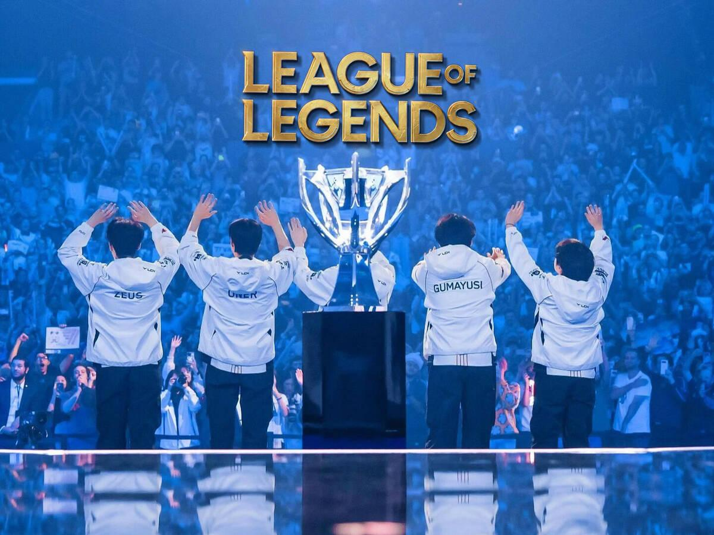

League of Legends Worlds 2024: T1 busca otro título histórico
La organización surcoreana T1 avanza firme en el Mundial de League of Legends 2024, con Faker y su equipo demostrando un nivel de juego impresionante. Los partidos de semifinales fueron intensos, y T1 logró imponerse con estrategia, coordinación y jugadas individuales de alto nivel.
Faker sigue siendo el corazón del equipo, tomando decisiones cruciales en momentos decisivos y mostrando su legendario control de personajes. El equipo ha mejorado notablemente su sinergia, con rotaciones limpias y un excelente control de objetivos en el mapa.
Los fans esperan que T1 logre un título histórico, consolidando su legado como una de las escuadras más exitosas en la historia de League of Legends. Los próximos enfrentamientos prometen ser épicos y mantener la tensión hasta la gran final.
Con su estilo característico y un enfoque táctico impecable, T1 demuestra por qué sigue siendo uno de los equipos más temidos del competitivo de LoL a nivel mundial.
⬅ Volver a eSports